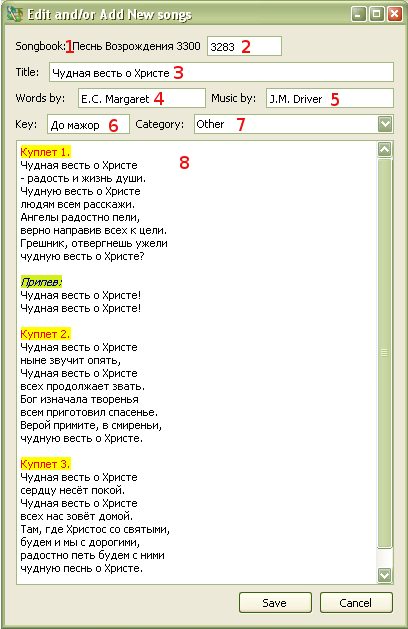

3.2 Editing Songs
To Edit a song:
A dialog box will pop up will all the data of that song. Shortcut: Crtl+E
Edit Dialog :

- displays songbook name in which
edited song is found.
- song number will be automatically
preloaded to the next song number in database when adding new song. If
needed, song numbers can be changes.
- song title must be present; or
else, saving of the song will not be permitted. All non-alphanumeric
character will be removed.
- name of the author who wrote words of
a song.
- name of the author who wrote music of
a song.
- Key/Tune in which a song is sung.
- currently un used.
- song text must be kept in proper
format. See Song Format for details.